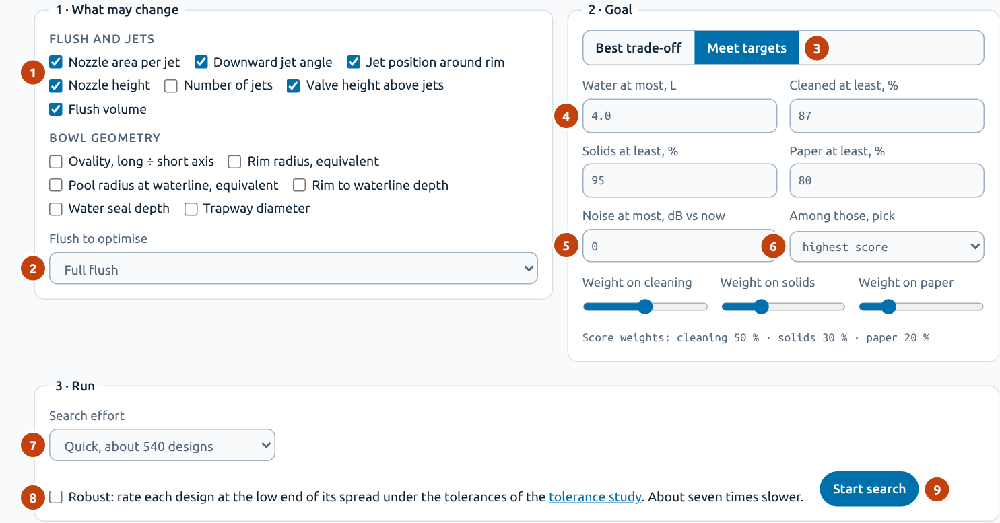
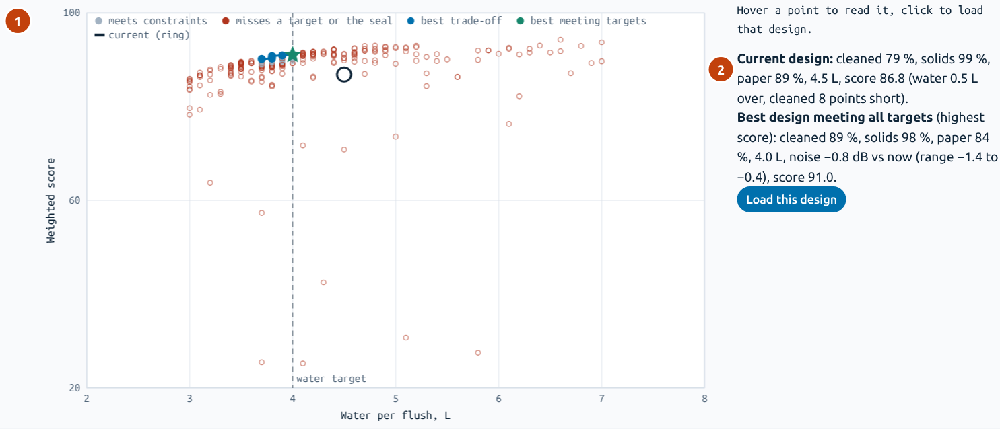
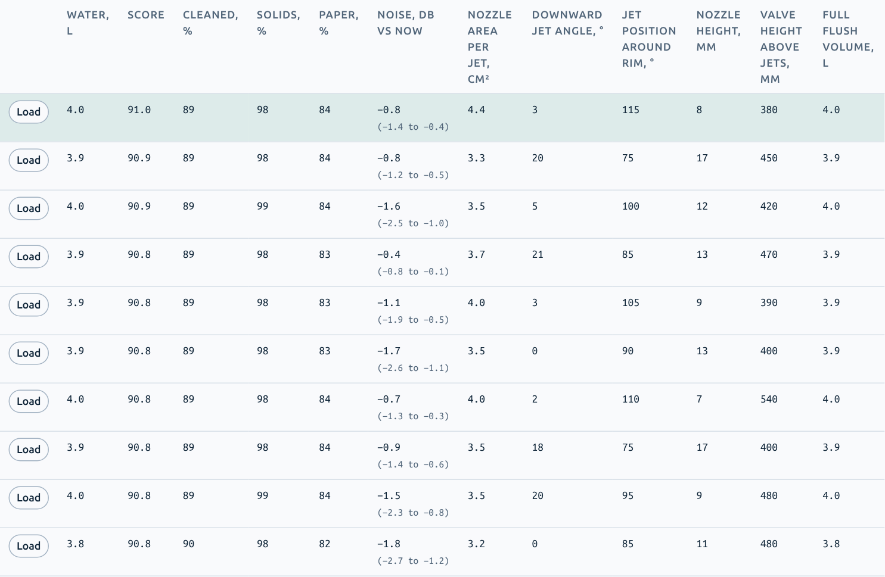
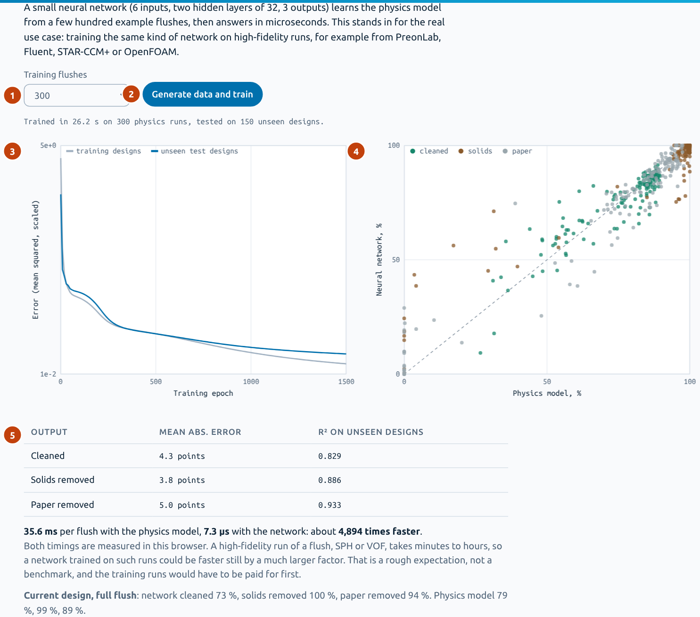
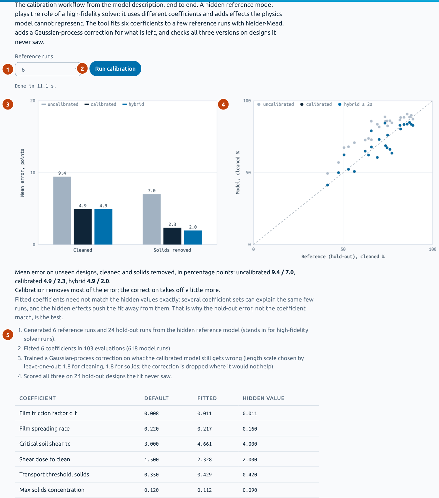
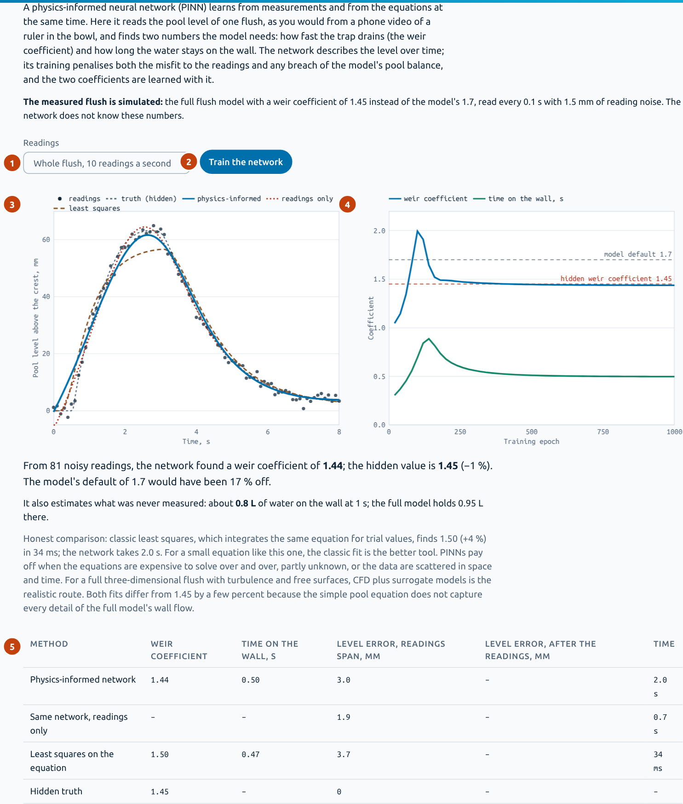
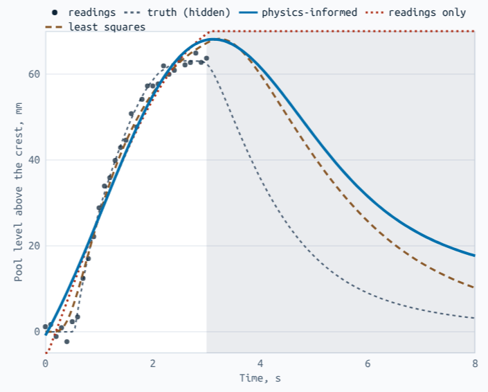
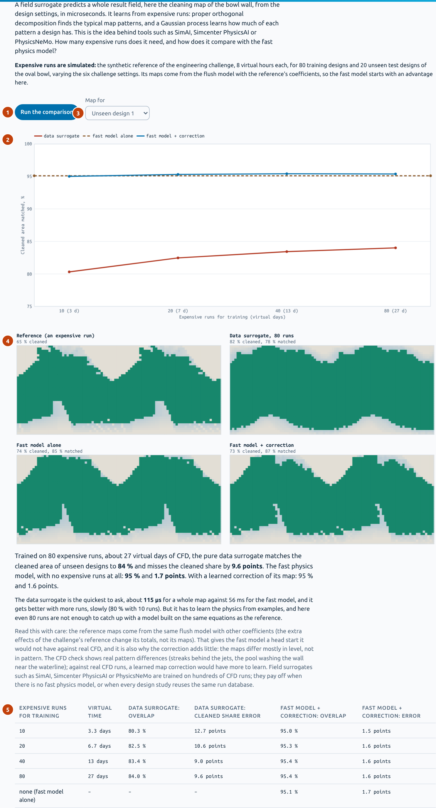
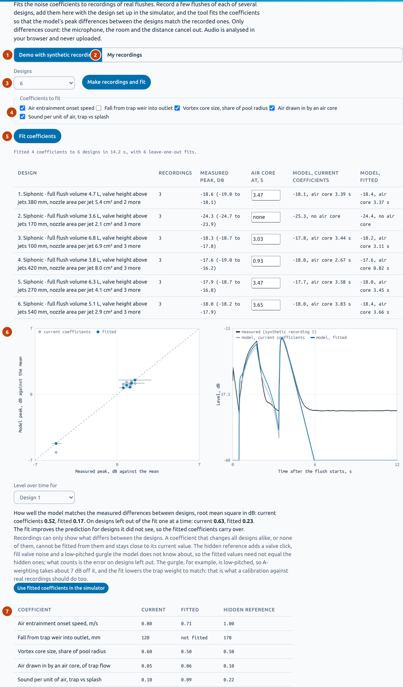

The simulator shows what one change does. These tutorials cover the rest: letting the computer search for designs that meet your targets, and using data to replace, calibrate or correct the model. Each one has a worked example you can repeat on the page.
| Your question | Tool | What it needs |
|---|---|---|
| Which designs meet my targets, and what is the trade-off between water and performance? | 1 · Design optimiser | Only the fast model |
| Can I get answers in microseconds, for very many evaluations? | 2 · Neural surrogate | A few hundred runs to learn from |
| I have a few expensive runs. How do I make the fast model match them? | 3 · Hybrid calibration | 4 to 10 expensive runs |
| I have a measurement over time, such as a video of the pool level. Which model coefficient does it give? | 4 · Physics-informed network | One record and the model's equation |
| Can I predict whole result fields, such as the cleaning map, from expensive runs? | 5 · Field surrogate | Tens of expensive runs with maps |
| I have sound recordings of flushes. How do I calibrate the noise indicator? | 6 · Noise calibration | Recordings of several designs |
| How many expensive runs does a design task take, if the model learns from each one? | Engineering challenge on the simulator page | A run budget |
Every tool runs in your browser, uses the fast physics model as its engine, and uses fixed random seeds, so a worked example gives the same numbers when you repeat it. Measured times, such as how much faster a surrogate is, depend on your computer. Except for the noise calibration with your own recordings, the expensive data are synthetic: the model with other coefficients and extra effects, labelled as such on the page. The tutorials show the workflows, not real accuracy. Method section 14 has the full description.
What it is: an evolutionary search (NSGA-II style). It breeds generations of designs, keeps the best, and in the end checks the designs it recommends at the simulator's full resolution. Use it when a design misses its targets and you want candidates for the next CFD or rig check, or to see the trade-off between water and performance.
Start on the simulator with Reset (EU washdown preset), then set Ovality in Bowl and trap to 1.35. The bowl now cleans 78.7 % of the wall with 4.5 L. Open the AI lab, tab Design optimiser.



Read the table, not only the winner. The top designs reach nearly the same score in different ways: nozzle areas from about 3 to 4.5 cm², jet angles from 0° to 21°, nozzle heights from 7 to 17 mm. What they share is what matters: the jets move from the ends of the long axis towards the long sides (75° to 115°), and the valve sits higher (380 to 540 mm). That is a design rule, and the spread of the rest is freedom a designer can use for manufacturing or cost.
Tick Robust and start again. Each design is now also simulated as six copies varied within the tolerances of the tolerance study, and rated at the low end of its spread. It takes about seven times as long: about 100 seconds here.
With the goal Best trade-off, the optimiser has no targets. It looks for the designs where you cannot raise the score without using more water: the blue curve. Move the weight sliders to say what matters, for example more weight on paper for a market with a lot of paper use; the designs already found are re-rated at once, without a new search.
With real data: the same search runs on a calibrated model (tutorial 3), or on a surrogate trained on CFD runs (tutorial 2). The engineering challenge shows the next step: a search that learns from every expensive run and decides where the next one is worth it.
What it is: a small neural network (6 inputs, two hidden layers of 32, 3 outputs) that learns the physics model from example flushes. Use it when you need very many evaluations, for example inside a large search or an uncertainty study, or when the model behind it is slow. In practice the examples would be CFD runs; here the fast model plays that part.
Keep the oval bowl from tutorial 1 (or Reset and set ovality to 1.35). The surrogate learns six design settings around the current design, so its numbers depend on where you start; the same holds for tutorial 3.

Result: trained in about 27 s on 300 runs, tested on 150 unseen designs. On the unseen designs:
| Output | Mean error | R² |
|---|---|---|
| Cleaned | 4.3 points | 0.829 |
| Solids removed | 3.8 points | 0.886 |
| Paper removed | 5.0 points | 0.933 |
And it is fast: 37 ms per flush with the physics model, 6 µs with the network, about 6,000 times faster in our test browser; your computer gives its own figure.
An error of about 4 points is as large as many design changes you care about, so the network is good for screening many designs quickly, not for final values. Try 100 and 800 training flushes to see how the error depends on the amount of data: that is the real question with CFD, where every training run costs hours.
With real data: train the same kind of network on CFD runs of designs spread over the design space. It pays off when many questions will be asked of the same run database.
What it is: the calibration workflow end to end. Six model coefficients are fitted to a few reference runs (Nelder-Mead), then a Gaussian process learns what the calibrated model still gets wrong. All three versions are scored on designs the fit never saw. Use it when you have a handful of CFD or rig results and want the fast model to agree with them.

Mean error on the 24 unseen designs, in points (cleaned / solids removed):
| Version | Cleaned | Solids |
|---|---|---|
| Uncalibrated (default coefficients) | 9.4 | 7.0 |
| Calibrated (6 coefficients fitted) | 4.9 | 2.3 |
| Hybrid (calibrated + learned correction) | 4.9 | 2.0 |
The fitted coefficients, next to the hidden ones:
| Coefficient | Default | Fitted | Hidden |
|---|---|---|---|
| Film friction factor | 0.008 | 0.011 | 0.011 |
| Film spreading rate | 0.220 | 0.217 | 0.160 |
| Critical soil shear τc, Pa | 3.000 | 4.661 | 4.000 |
| Shear dose to clean, Pa·s | 1.500 | 2.328 | 2.000 |
| Transport threshold, solids, m/s | 0.350 | 0.429 | 0.420 |
| Max solids concentration | 0.120 | 0.112 | 0.090 |
Calibration roughly halves the error on designs it never saw; the learned correction takes off a little more. The fitted coefficients are not the hidden ones, and that is normal: the critical shear and the shear dose both act on cleaning, so a few runs cannot tell them apart, and both come out high together. The coefficient sensitivity shows the same pair at the top. The test is the error on unseen designs, not the coefficient match.
With real data: pick reference designs spread over the design space, run them in CFD or on the rig, and fit. Method section 13 lists which measurement or CFD output fits which coefficient.
What it is: a neural network that learns from measurements and from the model's equation at the same time. Here it reads the pool level of one flush, as you would from a phone video of a ruler in the bowl, and finds how fast the trap drains (the weir coefficient) and how long water stays on the wall. Use it to pull model coefficients out of simple measurements over time.

Result: weir coefficient 1.44 against the hidden 1.45; the model's default of 1.7 would be 17 % off. It also estimates what was never measured: about 0.8 L of water on the wall at 1 s (the full model holds 0.95 L). Classic least squares on the same equation finds 1.50, in 31 ms instead of 2 s.

Choose Video stops after 3 s and train again. Now the network finds 0.78 and least squares 0.97, both far from 1.45: the filling alone cannot tell a slow drain from a long time on the wall. But the physics still helps beyond the readings: at 5 s the network with physics says 46 mm, without physics 77 mm, and the truth is 18 mm.
For an equation this small, least squares is quicker and the better tool, and the page says so. Physics-informed networks pay off when the equations are expensive to solve again and again, partly unknown, or the data are scattered in space and time. And the lesson of example B holds for any calibration: the measurement must contain the effect you want to fit.
With real data: film the pool from above with a ruler in it, read the level every 0.1 s over the whole flush, including the draining, and enter it in place of the simulated readings.
What it is: a model that predicts a whole result field, here the cleaning map of the bowl wall, from the design settings. It finds the typical map patterns (proper orthogonal decomposition) and learns how much of each a design has (Gaussian processes). This is the idea behind tools such as SimAI, Simcenter PhysicsAI or PhysicsNeMo. Use it to see how much a pure data model needs, compared with a fast physics model.

| Expensive runs for training | Data surrogate: area matched | Its error in the cleaned share | Fast model + correction: area matched |
|---|---|---|---|
| 10 (3.3 virtual days) | 80.3 % | 12.7 points | 95.0 % |
| 20 (6.7 days) | 82.5 % | 10.6 points | 95.3 % |
| 40 (13 days) | 83.4 % | 9.0 points | 95.4 % |
| 80 (27 days) | 84.0 % | 9.6 points | 95.4 % |
| none: fast model alone | – | – | 95.1 % |
The data surrogate is the quickest to ask, a fraction of a millisecond for a whole map, and it gets better with more runs, but slowly. Even 80 runs do not catch up with the fast physics model, which needs no expensive run at all. Be careful with that comparison: the reference maps here come from the same equations as the fast model, which gives it a head start it would not have against real CFD, and is also why the correction adds little.
With real data: train on CFD maps. Field surrogates pay off when there is no fast physics model, or when many studies reuse the same run database. A correction learned on CFD maps would have real pattern differences to learn, such as the streaks behind the jets in the CFD check.
What it is: a fit of the noise coefficients to recordings of real flushes, so that the model's differences between designs match the recorded ones. It is the one tool that takes your own data: audio files or sound level meter readings, analysed in your browser and never uploaded. Use it once you can record a few designs.

Result, as the root mean square error of the differences between designs: 0.52 dB with the current coefficients, 0.17 dB fitted; on designs left out of the fit one at a time, 0.63 against 0.23 dB. The left-out error is the test: the fitted coefficients carry over to designs the fit did not see.
Only differences between designs count, so the microphone, the room and the distance cancel out. The fitted coefficients need not equal the hidden ones, because the hidden reference has sounds the model does not know: a valve click, fill valve noise and a low-pitched gurgle. A-weighting takes about 7 dB off the gurgle, and the fit lowers the trap weight to match; a calibration against real recordings should do the same.
The demo uses siphonic designs, because the siphon's gurgle separates the trap sources from the splash sources. In a washdown bowl almost all of the noise comes from the outlet, and recordings say little about the other coefficients.
The screenshots and numbers on this page are made by tools/tutorial-shots.js, which runs every tool as described here; media/tutorial/results.json holds the numbers.